Symbolic Knowledge Extraction and Injection:
Theory and Methods
(last built on: 2025-11-02)
Matteo Magnini
Department of Computer Science and Engineering (DISI)
Alma Mater Studiorum—University of Bologna
ICR-CLAiM Seminar @ DCS, FSTM, University of Luxembourg
4th November 2025, Esch-sur-Alzette, Luxembourg
Link to these slides
About me
Research topics
- Symbolic and Neuro-Symbolic AI (NeSy)
- Symbolic Knowledge Injection (SKI)
- Symbolic Knowledge Extraction (SKE)
- Explainable AI (XAI)
- Fairness in AI
- Regularization for Group Fairness
- Large Language Models (LLMs)
- RAG pipelines
- Medical applications
Interests
- Scuba Diver
- NADD ADV
- ~40 dives
- Chess
- ELO ~1750 (estimated)
- History
- Hiking
- Cooking
- (or should I say eating)
Recent updates
Background
Quick overview on symbolic vs. sub-symbolic AI
Overview on AI

- wide field of research, with many sub-fields
- each sub-field has its own relevant tasks (problems) …
- … and each task comes with many useful methods (algorithms)
Symbolic vs. Sub-symbolic AI
Two broad categories of AI approaches:
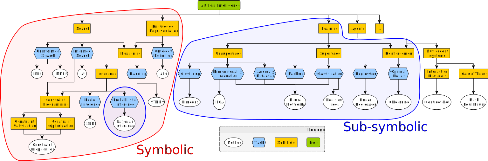Why the wording “Symbolic” vs. “Sub-symbolic”? (pt. 1)
Local vs. Distributed Representations

-
Local $\approx$ “symbolic”: each symbol has a clear, distinct meaning
- e.g.
"bear"is a symbol denoting a crisp category (either the animal is a bear or not)
- e.g.
-
Distributed $\approx$ “non-symbolic”: symbols do not have a clear meaning per se, but the whole representation does
- e.g.
"swim"is fuzzy capability: one animal may be (un)able to swim to some extent
- e.g.
Let’s say we need to represent $N$ classes, how many columns would the tables have?
Why the wording “Symbolic” vs. “Sub-symbolic”? (pt. 2)
What is a “symbol” after all? Aren’t numbers symbols too?
According to Tim van Gelder in 1990:
Symbolic representations of knowledge
- involve a set of symbols
- which can be combined (e.g., concatenated) in (possibly) infinitely many ways,
- following precise syntactical rules,
- where both elementary symbols and any admissible combination of them can be assigned with meaning
Why “Sub-symbolic” instead of “Non-symbolic” or just “Numerical”?
-
There exist approaches where symbols are combined with numbers, e.g.:
- Probabilistic logic programming: where logic statements are combined with probabilities
- Fuzzy logic: where logic statements are combined with degrees of truth
- Bayesian networks: a.k.a. graphical models, where nodes are symbols and edges are conditional dependencies with probabilities, e.g. 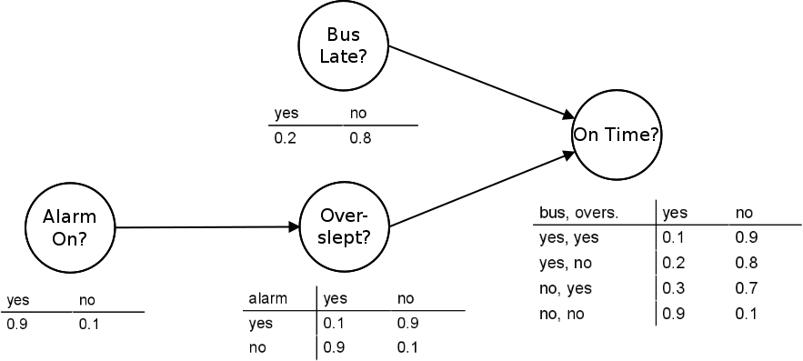
-
These approaches are not purely symbolic, but they are not purely numeric either, so we call the overall category “sub-symbolic”
Examples of Symbolic AI (pt. 1)
- Logic programming: SLD resolution (e.g., Prolog)
- Knowledge representation: Semantic Web (e.g., OWL), Description Logics (e.g., ALC)
- Automated reasoning: Theorem proving, Model checking
- Planning: STRIPS, PDDL
Examples of Symbolic AI (pt. 2)
Logic programming with SLD resolution

Examples of Symbolic AI (pt. 3)
Ontology definition in OWL
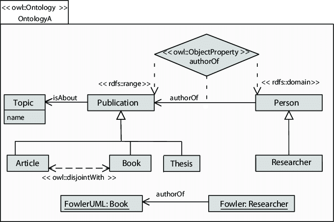Examples of Symbolic AI (pt. 4)
Model-checking (as opposed to testing)

Examples of Symbolic AI (pt. 5)
Planning in STRIPS

Available actions
grab(X): grabs blockXfrom the tableput(X): puts blockXon the tablestack(X, Y): stacks blockXon top of blockYunstack(X, Y): un-stacks blockXfrom blockY
What do these symbolic approaches have in common?
-
Structured representations: knowledge (I/O data) is represented in a structured, formal way (e.g., logic formulas, ontologies)
-
Algorithmic manipulation of representations: each approach relies on algorithms that manipulate these structured representations following exact rules
-
Crisp semantics: the meaning of the representations is well-defined, and the algorithms produce exact results
- representations are either well-formed or not, algorithms rely on rules which are either applicable or not
-
Model-driven: algorithms may commonly work in zero- or few-shot settings, humans must commonly model and encode knowledge in the target structure
-
Clear computational complexity: the decidability, complexity, and tractability of the algorithms are well understood
Examples of Sub-symbolic AI (pt. 1)
-
Machine learning: supervised, unsupervised, and reinforcement learning
- Supervised learning: fitting a discrete (classification) or a continuous function (regression) from examples
- Unsupervised learning: clustering, dimensionality reduction
- Reinforcement learning: learning a policy to maximize a reward signal, via simulation
-
Probabilistic reasoning: Bayesian networks, Markov models, probabilistic logic programming
Examples of Sub-symbolic AI (pt. 2)
Supervised learning
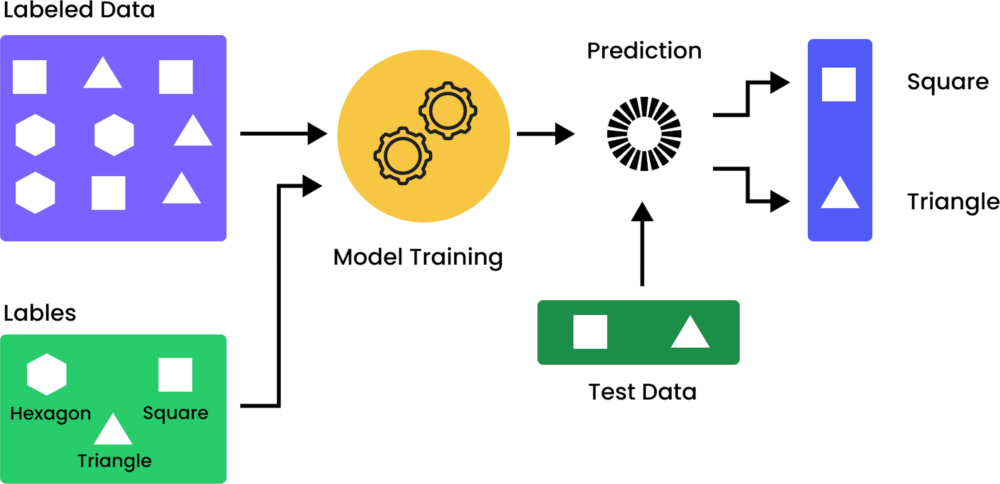Examples of Sub-symbolic AI (pt. 3)
Supervised learning – Classification vs. Regression (1/2)
Data separation vs. curve fitting:
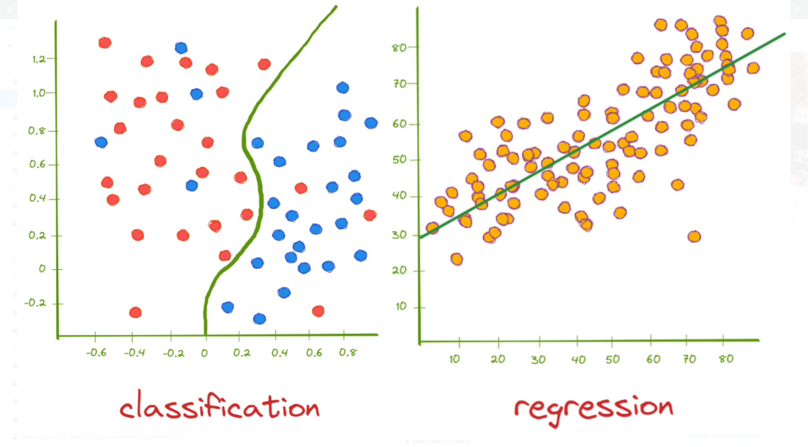Examples of Sub-symbolic AI (pt. 4)
Supervised learning – Classification vs. Regression (2/2)
Focus on the target feature:

Examples of Sub-symbolic AI (pt. 5)
Unsupervised learning – Clustering
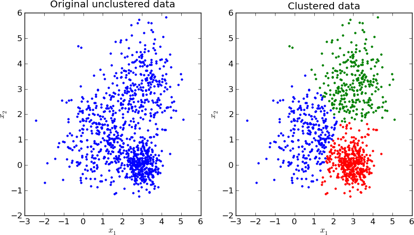Examples of Sub-symbolic AI (pt. 6)
Unsupervised learning – Reinforcement learning (metaphor)

Examples of Sub-symbolic AI (pt. 7)
Reinforcement learning – Reinforcement learning (policy)

What do these sub-symbolic approaches have in common?
-
Numeric representations: knowledge (I/O data) is represented in a less structured way, often as vectors/matrices/tensors of numbers
-
Differentiable manipulation of representations: algorithms rely on mathematical operations involving these numeric representations, most-commonly undergoing some optimization process
- e.g., sum, product, max, min, etc.
-
Fuzzy/continuous semantics: representations are from continuous spaces, where similarities and distances are defined in a continuous way, and algorithms may yield fuzzy results
-
Data-driven + Usage vs. training: algorithms are often trained on data, to be later re-used on other data
- usage is commonly impractical or impossible without training
-
Unclear computational complexity: strong reliance on greedy or time-limited optimization methods, lack of theoretical guarantees on the quality of the results
Long-standing dualism
Intuition vs. Reasoning
- Esprit de finesse vs. Esprit de géométrie (Philosophy) — Blaise Pascal, 1669
- Cognitive vs. Behavioural Psychology — B.F. Skinner, 1950s
- System 1 (fast, intuitive) vs. System 2 (slow, rational) — Daniel Kahneman, 2011
Sub-symbolic AI
- Provides mechanisms emulating human-like intuition
- Quick, possibly error-prone, but often effective
- Requires learning from data
- Often opaque, hard to interpret or explain
Symbolic AI
- Provides mechanisms emulating human-like reasoning
- Slow, but precise and verifiable
- Requires symbolic modeling and encoding knowledge
- Often transparent, easier to interpret and explain
Need for integration
- the NeSy community has long recognized the complementarity among symbolic and sub-symbolic approaches…
- … with a focus on neural-networks (NN) based sub-symbolic methods, as they are very flexible
Patterns of integration or combination (cf. Bhuyan et al., 2024)
Symbolic Neuro-Symbolic: symbols $\rightarrow$ vectors $\rightarrow$ NNs $\rightarrow$ vectors $\rightarrow$ symbolsSymbolic[Neuro]: symbolic module $\xrightarrow{invokes}$ NN $\rightarrow $ outputNeuro | Symbolic: NN $\xrightarrow{cooperates}$ symbolic module $\xrightarrow{cooperates}$ NN $\rightarrow$ …Neuro-Symbolic → Neuro: symbolic knowledge $\xrightarrow{influences}$ NNNeuroSymbolic: symbolic knowledge $\xrightarrow{constrains}$ NNNeuro[Symbolic]: symbolic module $\xrightarrow{embedded in}$ NN
Focus on two main approaches
(cf. Ciatto et al., 2024)
-
Symbolic Knowledge Extraction (SKE): extracting symbolic knowledge from sub-symbolic models
- for the sake of explainability and interpretability in machine learning
-
Symbolic Knowledge Injection (SKI): injecting symbolic knowledge into sub-symbolic models
- for the sake of trustworthiness and robustness in machine learning
Both require some basic understanding of how supervised machine learning works
Symbolic Knowledge Extraction (SKE)
How to extract symbolic knowledge from sub-symbolic predictors
Definition and Motivation (pt. 1)
any algorithmic procedure accepting trained sub-symbolic predictors as input and producing symbolic knowledge as output, so that the extracted knowledge reflects the behaviour of the predictor with high fidelity.
Definition and Motivation (pt. 2)
-
Explainable AI (XAI): SKE methods are often used to provide explanations for the decisions made by sub-symbolic predictors, making them more interpretable and understandable to humans (a.k.a. post-hoc explainability)
- local explanations: explanations for individual predictions
- global explanations: explanations for the overall behaviour of the predictor
-
Knowledge discovery: SKE methods can help discover patterns and relationships in the data that may not be immediately apparent, thus providing insights into the underlying processes
-
Model compression: SKE methods can simplify complex sub-symbolic models by extracting symbolic rules that approximate their behaviour, thus reducing the model’s size and complexity
Explainability vs Interpretability
They are not synonyms in spite of the fact that they are often used interchangeably!
Explanation
-
elicits relevant aspects of objects (to ease their interpretation)
-
it is an operation that transform poorly interpretable objects into more interpretable ones
-
search of a surrogate interpretable model
Interpretation
-
binds objects with meaning (what the human mind does)
-
it is subjective
-
it does not need to be measurable, only comparisons
Concepts
Main entities and how to extract symbolic knowledge from sub-symbolic predictors
Entities
Sub-symbolic predictor
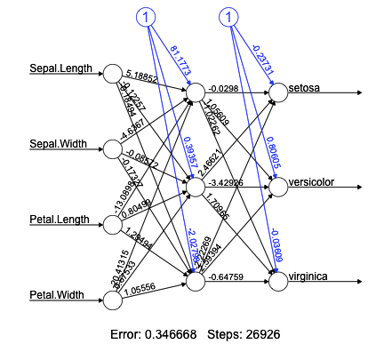Symbolic knowledge
| Logic Rule |
|---|
| Class = setosa ← PetalWidth ≤ 1.0 |
| Class = versicolor ← PetalLength > 4.9 ∧ SepalWidth ∈ [2.9, 3.2] |
| Class = versicolor ← PetalWidth > 1.6 |
| Class = virginica ← SepalWidth ≤ 2.9 |
| Class = virginica ← SepalLength ∈ [5.4, 6.3] |
| Class = virginica ← PetalWidth ∈ [1.0, 1.6] |
How SKE works
Decompositional SKE
if the method needs to inspect (even partially) the internal parameters of the underlying black-box predictor, e.g., neuron biases or connection weights for NNs, or support vectors for SVMs
Pedagogical SKE
if the algorithm does not need to take into account any internal parameter, but it can extract symbolic knowledge by only relying on the predictor’s outputs.
CART (pt. 1)
Classification and regression trees (cf. Breiman et al., 1984)
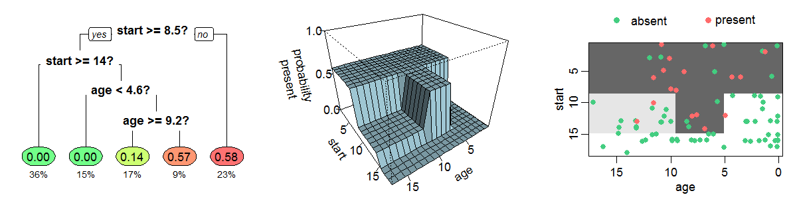An example decision tree estimating the probability of kyphosis after spinal surgery, given the age of the patient and the vertebra at which surgery was start ed (rf. wiki:dt-learning). Notice that all decision trees subtend a partition of the input space, and that those trees themselves provide intelligible representations of how predictions are attained.
CART (pt. 2)
-
generate a synthetic dataset by using the predictions of the sub-symbolic predictor
-
train a decision tree on the synthetic dataset
-
compute the fidelity and repeat step 2 until satisfied
-
[optional] rewrite the tree as a set of symbolic rules
Adult classification task (pt. 1)
The Adult dataset (cf. Becker Barry and Kohavi Ronny, 1996) contains the records (48,842) of individuals based on census data (this dataset is also known as Census Income).
The dataset has many features (14) related to the individuals’ demographics, such as age, education, and occupation.
The target feature is whether the individual earns more than $50,000 per year.
| age | workclass | education | … | hours-per-week | native-country | income |
|---|---|---|---|---|---|---|
| 39 | State-gov | Bachelors | … | 40 | United-States | <=50K |
| 50 | Self-emp-not-inc | Bachelors | … | 13 | United-States | <=50K |
| 38 | Private | HS-grad | … | 40 | United-States | <=50K |
| 53 | Private | 11th | … | 40 | United-States | <=50K |
| 28 | Private | Bachelors | … | 40 | Cuba | <=50K |
| 37 | Private | Masters | … | 40 | United-States | <=50K |
| 49 | Private | 9th | … | 16 | Jamaica | <=50K |
| 52 | Self-emp-not-inc | HS-grad | … | 45 | United-States | >50K |
| 31 | Private | Masters | … | 50 | United-States | >50K |
| 42 | Private | Bachelors | … | 40 | United-States | >50K |
Adult classification task (pt. 2)
We can train a simple feed-forward neural network for a fixed amount of epoches on the Adult dataset to classify whether an individual earns more than $50,000 per year.
class AdultNet(nn.Module):
def __init__(self):
super().__init__()
self.model = nn.Sequential(
nn.Linear(FEATURE_NUMBER, HIDDEN_SIZE),
nn.ReLU(),
nn.Linear(HIDDEN_SIZE, HIDDEN_SIZE),
nn.ReLU(),
nn.Linear(HIDDEN_SIZE, CLASS_NUMBER)
)
def forward(self, x):
return self.model(x)
def train_model() -> tuple[nn.Module, list[float]]:
model = AdultNet()
model.to(device)
optimizer = optim.Adam(model.parameters(), lr=0.001)
criterion = nn.CrossEntropyLoss()
train_losses = []
for epoch in range(EPOCHES):
model.train()
optimizer.zero_grad()
output = model(X_train_tensor)
loss = criterion(output, y_train_tensor)
loss.backward()
optimizer.step()
train_losses.append(loss.item())
if (epoch + 1) % 10 == 0 or epoch == EPOCHES - 1:
print(f"Epoch {epoch+1}: loss = {loss.item():.4f}")
return model, train_losses
Adult classification task (pt. 3)
| Class | Precision | Recall | F1-Score | Support |
|---|---|---|---|---|
| <=50K | 0.867812 | 0.935882 | 0.900562 | 24.720 |
| >50K | 0.731447 | 0.550568 | 0.628247 | 7.841 |
| Accuracy | 0.843094 | 32.561 | ||
| Macro Avg | 0.799629 | 0.743225 | 0.764405 | 32.561 |
| Weighted Avg | 0.834974 | 0.843094 | 0.834986 | 32.561 |
Extracted rules (pt. 1)
Decision Rules
- class = 0 if 
education ≤ 12.5 and capital-gain ≤ 3048 - class = 1 if 
education ≤ 12.5 and capital-gain > 3048 - class = 0 if 
education > 12.5 and occupation ≤ 0.5 and hours-per-week ≤ 31 - class = 1 if 
education > 12.5 and occupation ≤ 0.5 and hours-per-week > 31 - class = 0 if 
education > 12.5 and occupation > 0.5 and capital-gain ≤ 3869 and occupation ≤ 4.5 - class = 1 if 
education > 12.5 and occupation > 0.5 and capital-gain ≤ 3869 and occupation > 4.5 - class = 1 if 
education > 12.5 and occupation > 0.5 and capital-gain > 3869
Extracted rules (pt. 2)
| Class | Precision | Recall | F1-Score | Support |
|---|---|---|---|---|
| 0 | 0.97 | 0.98 | 0.97 | 26659 |
| 1 | 0.89 | 0.84 | 0.86 | 5902 |
| Accuracy | 0.95 | 32561 | ||
| Macro Avg | 0.93 | 0.91 | 0.92 | 32561 |
| Weighted Avg | 0.95 | 0.95 | 0.95 | 32561 |
Taxonomy of SKE methods (pt. 1)

Taxonomy of SKE methods (pt. 2)
Target AI task
-
classification
$f: ùí≥ ‚äÜ ‚Ñù‚Åø → ùí¥ s.t. |ùí¥| = k$ -
regression
$f: ùí≥ ‚äÜ ‚Ñù‚Åø → ùí¥ ‚äÜ ‚Ñù·µê$
Input data
-
binary
$ùí≥ ‚â° {0, 1}‚Åø$ -
discrete
$ùí≥ ∈ {x₁, ‚Ķ, x‚Çô}‚Åø$ -
continuous
$ùí≥ ‚äÜ ‚Ñù‚Åø$
Taxonomy of SKE methods (pt. 3)
Shape
-
rule list, ordered sequences of if-then-else rules
-
decision tree, hierarchical set of if-then-else rules involving a comparison among a variable and a constant
-
decision table, 2D tables summarising decisions for each possible assignment of the input variables
Expressiveness
-
propositional, boolean statements + logic connectives, including arithmetic comparisons among variables and constants
-
fuzzy, hierarchical set of if-then-else rules involving a comparison among a variable and a constant
-
oblique, boolean statements + logic connectives + arithmetic comparisons
-
M-of-N, any of the above + statements of the form “at least $k$ of the following statements are true”
Discussion
Notable remarks
-
discretisation of the input space
-
discretisation of the output space
-
features should have semantic meaning
-
rules constitutes global explanations
Limitations
-
tabular data as input, no images
-
high dimensional datasets could lead to poorly readable rules
-
high variable input spaces could do the same
Symbolic Knowledge Injection (SKI)
How to inject symbolic knowledge into sub-symbolic predictors
Definition and Motivation (pt. 1)
Any algorithmic procedure affecting how sub-symbolic predictors draw their inferences in such a way that predictions are either computed as a function of, or made consistent with, some given symbolic knowledge.
Definition and Motivation (pt. 2)
-
Improve predictive performance: by injecting symbolic knowledge, we can
- guide the learning process in order to penalise inconsistencies with the symbolic knowledge, or
- structure the model’s architecture to mimic the symbolic knowledge
-
Enhance interpretability: with SKI we can make predictors that are
- interpretable by transparent box design, as they are built to mimic symbolic knowledge
- interpretable using symbols as constraints, as they are built to respect symbolic knowledge
-
Robustness to data degradation: symbolic knowledge can help sub-symbolic models maintain performance even in the presence of noisy or scarcity of data
-
Enhance fairness: by incorporating symbolic knowledge about fairness constraints, we can ensure that sub-symbolic models make decisions that align with ethical considerations
-
And more: SKI can simplify the predictor’s architecture, in particular it can reduce the number of weights in a neural network, thus improving its efficiency and reducing the risk of overfitting
Concepts
Main entities and how to inject symbolic knowledge into sub-symbolic predictors
Entities
-
Predictor: a sub-symbolic model that makes predictions based on input data, usually a neural network
-
Symbolic knowledge: structured, formal knowledge that can be represented in a symbolic form. The most common forms of symbolic knowledge are
- Propositional logic, simple rules with if-then structure
- Datalog, a subset of first-order logic with no function symbols, only constants and variables
-
Fuzzification: the process of converting symbolic knowledge into a form that can be used by sub-symbolic predictors, e.g. by assigning degrees of truth to symbolic statements
-
Injector: the main component that injects symbolic knowledge into the predictor, by modifying its architecture, its training process or by other means
Structuring

Constraining
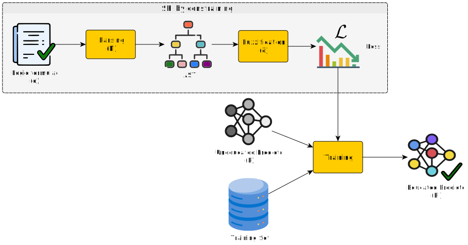Embedding
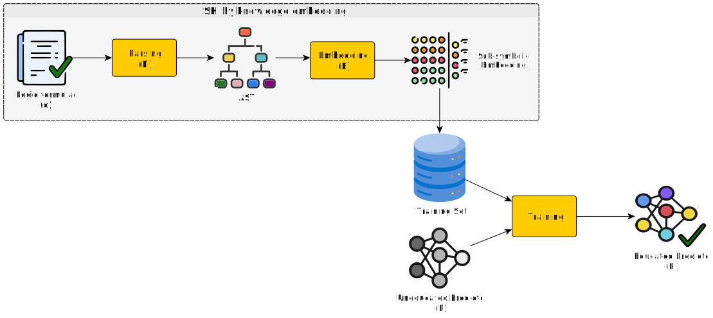Knowledge Injection via Network Structuring (KINS)
(ref. Magnini et al., 2023)
Fuzzification
| Formula | C. interpretation | Formula | C. interpretation |
|---|---|---|---|
| $[[ \neg \phi ]]$ | $\eta(1 - [[ \phi ]])$ | $[[ \phi \le \psi ]]$ | $\eta(1 + [[ \psi ]] - [[ \phi ]])$ |
| $[[ \phi \wedge \psi ]]$ | $\eta(\min([[ \phi ]], [[ \psi ]]))$ | $[[ class(\bar{X}, {y}_i) \leftarrow \psi ]]$ | $[[ \psi ]]^{*}$ |
| $[[ \phi \vee \psi ]]$ | $\eta(\max([[ \phi ]], [[ \psi ]]))$ | $[[ \text{expr}(\bar{X}) ]]$ | $\text{expr}([[ \bar{X} ]])$ |
| $[[ \phi = \psi ]]$ | $\eta([[ \neg( \phi \ne \psi ) ]])$ | $[[ \mathtt{true} ]]$ | $1$ |
| $[[ \phi \ne \psi ]]$ | $\eta(| [[ \phi ]] - [[ \psi ]]|)$ | $[[ \mathtt{false} ]]$ | $0$ |
| $[[ \phi > \psi ]]$ | $\eta(\max(0, \frac{1}{2} + [[ \phi ]] - [[ \psi ]]))$ | $[[ X ]]$ | $x$ |
| $[[ \phi \ge \psi ]]$ | $\eta(1 + [[ \phi ]] - [[ \psi ]])$ | $[[ k ]]$ | $k$ |
| $[[ \phi < \psi ]]$ | $\eta(\max(0, \frac{1}{2} + [[ \psi ]] - [[ \phi ]]))$ | $[[ p(\bar{X}) ]]^{**}$ | $[[ \psi_1 \vee \ldots \vee \psi_k ]]$ |
$^{*}$ encodes the value for the $i^{\text{th}}$ output $^{**}$ assuming $p$ is defined by $k$ clauses of the form: ${p}(\bar{X}) \leftarrow \psi_1,\ \ldots,\ {p}(\bar{X}) \leftarrow \psi_k$
Injector (pt.1)
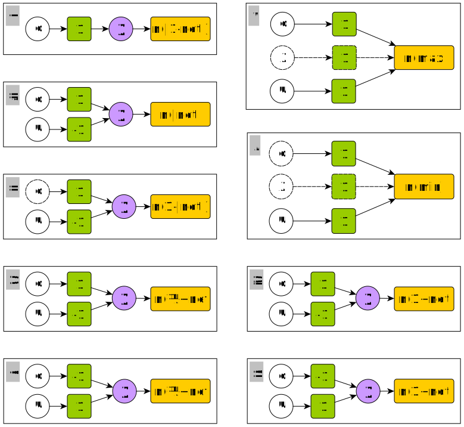Injector (pt. 2)
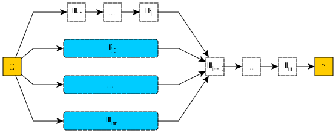Knowledge Injection via Lambda Layer (KILL)
(ref. Magnini et al., 2022)
Fuzzification
| Formula | C. interpretation | Formula | C. interpretation | |
|---|---|---|---|---|
| $[[\neg \phi]]$ | $\eta(1 - [[\phi]])$ | $[[\phi \le \psi]]$ | $\eta([[\phi]] - [[\psi]])$ | |
| $[[\phi \wedge \psi]]$ | $\eta(\max([[\phi]], [[\psi]]))$ | $[\mathrm{class}(\bar{X}, {y}_i) \leftarrow \psi]]$ | $[[\psi]]^{*}$ | |
| $[[\phi \vee \psi]]$ | $\eta(\min([[\phi]], [[\psi]]))$ | $[\text{expr}(\bar{X})]]$ | $\text{expr}([[\bar{X}]])$ | |
| $[[\phi = \psi]]$ | $\eta(\left\lvert [[\phi]] - [[\psi]] \right\rvert)$ | $[[\mathtt{true}]]$ | $0$ | |
| $[[\phi \ne \psi]]$ | $[[\neg(\phi = \psi)]]$ | $[[\mathtt{false}]]$ | $1$ | |
| $[[\phi > \psi]]$ | $\eta(\frac{1}{2} - [[\phi]] + [[\psi]])$ | $[[X]]$ | $x$ | |
| $[[\phi \ge \psi]]$ | $\eta([[\psi]] - [[\phi]])$ | $[[{k}]]$ | $k$ | |
| $[[\phi < \psi]]$ | $\eta(\frac{1}{2} + [[\phi]] - [[\psi]])$ | $[\mathrm{p}(\bar{X})]]^{**}$ | $[[\psi_1 \vee \ldots \vee \psi_k]]$ |
$^{*}$ encodes the penalty for the $i^{\text{th}}$ neuron $^{**}$ assuming predicate $p$ is defined by $k$ clauses of the form: ${p}(\bar{X}) \leftarrow \psi_1,\ \ldots,\ {p}(\bar{X}) \leftarrow \psi_k$
Injector (pt.1)
Cost function: whenever the neural network wrongly predicts a class and violates the prior knowledge a cost proportional to the violation is added.
In this way the output of the network differs more from the expected one and this affects the back propagation step.
Injector (pt. 2)
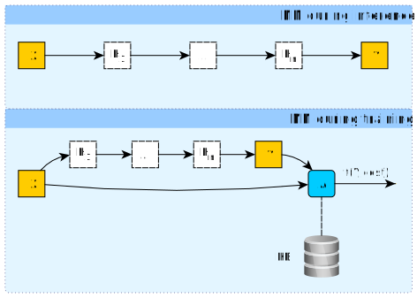PHDS classification task
The poker hand data set (PHDS) (cf. Cattral Robert and Oppacher Franz, 2002)
-
Each record represents one poker hand
-
5 cards identified by 2 values: suit and rank
-
Classes: 10
-
Training set: 25,010
-
Test set: 1,000,000
| id | S1 | R1 | S2 | R2 | S3 | R3 | S4 | R4 | S5 | R5 | class |
|---|---|---|---|---|---|---|---|---|---|---|---|
| 1 | 1 | 10 | 1 | 11 | 1 | 13 | 1 | 12 | 1 | 1 | 9 |
| 2 | 2 | 11 | 2 | 13 | 2 | 10 | 2 | 12 | 2 | 1 | 9 |
| 3 | 3 | 12 | 3 | 11 | 3 | 13 | 3 | 10 | 3 | 1 | 9 |
| 4 | 4 | 10 | 4 | 11 | 4 | 1 | 4 | 13 | 4 | 12 | 9 |
| 5 | 4 | 1 | 4 | 13 | 4 | 12 | 4 | 11 | 4 | 10 | 9 |
| 6 | 1 | 2 | 1 | 4 | 1 | 5 | 1 | 3 | 1 | 6 | 8 |
| 7 | 1 | 9 | 1 | 12 | 1 | 10 | 1 | 11 | 1 | 13 | 8 |
| 8 | 2 | 1 | 2 | 2 | 2 | 3 | 2 | 4 | 2 | 5 | 8 |
| 9 | 3 | 5 | 3 | 6 | 3 | 9 | 3 | 7 | 3 | 8 | 8 |
| 10 | 4 | 1 | 4 | 4 | 4 | 2 | 4 | 3 | 4 | 5 | 8 |
| 11 | 1 | 1 | 2 | 1 | 3 | 9 | 1 | 5 | 2 | 3 | 1 |
| 12 | 2 | 6 | 2 | 1 | 4 | 13 | 2 | 4 | 4 | 9 | 0 |
| 13 | 1 | 10 | 4 | 6 | 1 | 2 | 1 | 1 | 3 | 8 | 0 |
| 14 | 2 | 13 | 2 | 1 | 4 | 4 | 1 | 5 | 2 | 11 | 0 |
| 15 | 3 | 8 | 4 | 12 | 3 | 9 | 4 | 2 | 3 | 2 | 1 |
An unbalanced dataset
Logic rules to inject (pt. 1)
| Class | Logic Formulation |
|---|---|
| Pair | class(R₁, ..., S₅, pair) ← pair(R₁, ..., S₅)pair(R₁, ..., S₅) ← R₁ = R₂pair(R₁, ..., S₅) ← R₁ = R₃pair(R₁, ..., S₅) ← R₁ = R₄pair(R₁, ..., S₅) ← R₁ = R₅pair(R₁, ..., S₅) ← R₂ = R₃pair(R₁, ..., S₅) ← R₂ = R₄pair(R₁, ..., S₅) ← R₂ = R₅pair(R₁, ..., S₅) ← R₃ = R₄pair(R₁, ..., S₅) ← R₃ = R₅pair(R₁, ..., S₅) ← R₄ = R₅ |
Logic rules to inject (pt. 2)
| Class | Logic Formulation |
|---|---|
| Two Pairs | class(R₁, ..., S₅, two) ← two(R₁, ..., S₅)two(R₁, ..., S₅) ← R₁ = R₂ ∧ R₃ = R₄two(R₁, ..., S₅) ← R₁ = R₃ ∧ R₂ = R₄two(R₁, ..., S₅) ← R₁ = R₄ ∧ R₂ = R₃two(R₁, ..., S₅) ← R₁ = R₂ ∧ R₃ = R₅two(R₁, ..., S₅) ← R₁ = R₃ ∧ R₃ = R₅two(R₁, ..., S₅) ← R₁ = R₅ ∧ R₂ = R₃two(R₁, ..., S₅) ← R₁ = R₂ ∧ R₄ = R₅two(R₁, ..., S₅) ← R₁ = R₄ ∧ R₂ = R₅two(R₁, ..., S₅) ← R₁ = R₅ ∧ R₂ = R₄two(R₁, ..., S₅) ← R₁ = R₃ ∧ R₄ = R₅two(R₁, ..., S₅) ← R₁ = R₄ ∧ R₃ = R₅two(R₁, ..., S₅) ← R₁ = R₅ ∧ R₃ = R₄two(R₁, ..., S₅) ← R₂ = R₃ ∧ R₄ = R₅two(R₁, ..., S₅) ← R₂ = R₄ ∧ R₃ = R₅two(R₁, ..., S₅) ← R₂ = R₅ ∧ R₃ = R₄ |
Logic rules to inject (pt. 3)
| Class | Logic Formulation |
|---|---|
| Three of a Kind | class(R₁, ..., S₅, three) ← three(R₁, ..., S₅)three(R₁, ..., S₅) ← R₁ = R₂ ∧ R₁ = R₃three(R₁, ..., S₅) ← R₁ = R₂ ∧ R₁ = R₄three(R₁, ..., S₅) ← R₁ = R₂ ∧ R₁ = R₅three(R₁, ..., S₅) ← R₁ = R₃ ∧ R₁ = R₄three(R₁, ..., S₅) ← R₁ = R₃ ∧ R₁ = R₅three(R₁, ..., S₅) ← R₁ = R₄ ∧ R₁ = R₅three(R₁, ..., S₅) ← R₂ = R₃ ∧ R₂ = R₄three(R₁, ..., S₅) ← R₂ = R₃ ∧ R₂ = R₅three(R₁, ..., S₅) ← R₂ = R₄ ∧ R₂ = R₅three(R₁, ..., S₅) ← R₃ = R₄ ∧ R₃ = R₅ |
| Flush | class(R₁, ..., S₅, flush) ← flush(R₁, ..., S₅)flush(R₁, ..., S₅) ← S₁ = S₂ ∧ S₁ = S₃ ∧ S₁ = S₄ ∧ S₁ = S₅ |
Training the models (pt. 1)
class PokerNet(nn.Module):
def __init__(self):
super().__init__()
self.model = nn.Sequential(
nn.Linear(FEATURE_NUMBER, HIDDEN_SIZE),
nn.ReLU(),
nn.Linear(HIDDEN_SIZE, HIDDEN_SIZE),
nn.ReLU(),
nn.Linear(HIDDEN_SIZE, CLASS_NUMBER)
)
def forward(self, x):
return self.model(x)
def rule_high_card(x_batch_orig, pred_logits):
ranks = x_batch_orig[:, 1::2].int() # Extract ranks from the input
num_pairs = count_occurrences(ranks, 2) # Count occurrences of pairs
is_high_card = (num_pairs == 0) # Check if there are no pairs
prob_high_card = torch.softmax(pred_logits, dim=1)[:, 0] # Probability of "High Card"
penalty = ((1 - prob_high_card) ** 2) * is_high_card.float() # Calculate penalty
return penalty.mean()
def rule_one_pair(x_batch_orig, pred_logits):
ranks = x_batch_orig[:, 1::2].int() # Extract ranks from the input
num_pairs = count_occurrences(ranks, 2) # Count occurrences of pairs
is_one_pair = (num_pairs == 1) # Check if there is exactly one pair
prob_one_pair = torch.softmax(pred_logits, dim=1)[:, 1] # Probability of "One Pair"
penalty = ((1 - prob_one_pair) ** 2) * is_one_pair.float() # Calculate penalty
return penalty.mean()
Training the models (pt. 2)
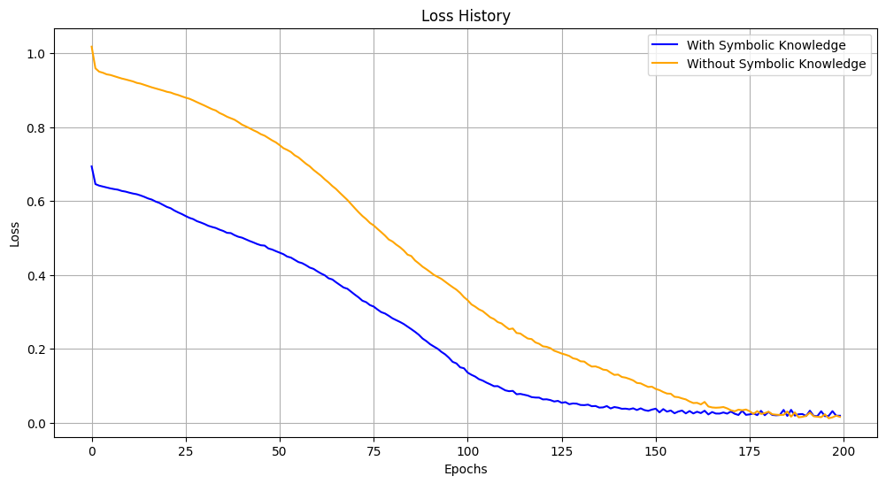Results
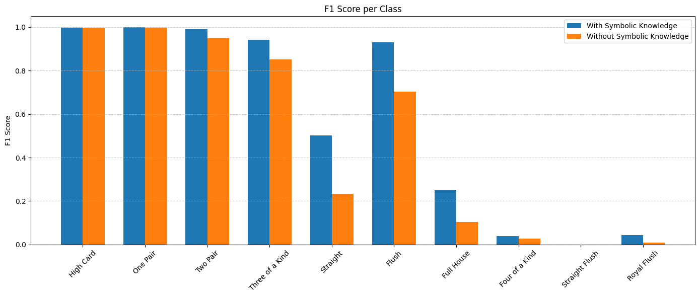Taxonomy of SKI methods (pt. 1)
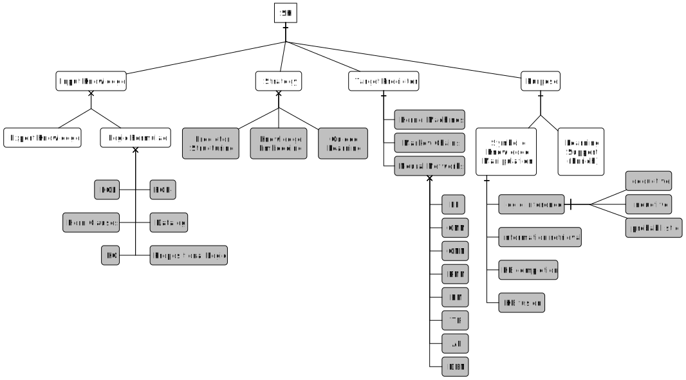Taxonomy of SKI methods (pt. 2)
-
input knowledge: how is the knowledge to-be-injected represented?
- commonly, some sub-set of first-order logic (FOL)
-
target predictor: which predictors can knowledge be injected into?
- mostly, neural networks
-
strategy: how does injection actually work?
- guided learning: the input knowledge is used to guide the training process
- structuring: the internal composition of the predictor is (re-)structured to reflect the input knowledge
- embedding: the input knowledge is converted into numeric array form
-
purpose: why is knowledge injected in the first place?
- knowledge manipulation: improve / extend / reason about symbol knowledge—subsymbolically
- learning support: improve the sub-symbolic predictor (e.g. speed, size, etc.)
Discussion
Notable remarks
-
Knowledge should express relations about input-output pairs
-
embedding implies extensional representation of knowledge
-
guided learning and structuring support intensional knowledge
-
propositional knowledge implies binarising the I/O space
Limitations
-
Recursive data structures are natively not supported
-
extensional representation cost storage
-
guided learning works poorly with lacking data
NeSy applications with LLMs
Last recent works on Neural-Symbolic AI involve Large Language Models
LLMs as oracles for instantiating ontologies with domain-specific knowledge
(ref. Ciatto et al., 2025)
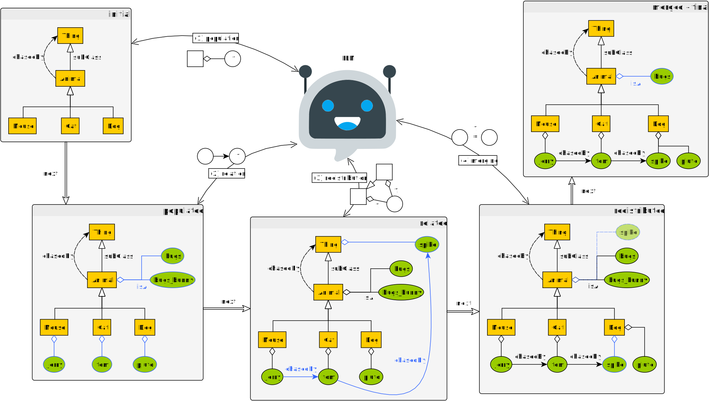Experiments
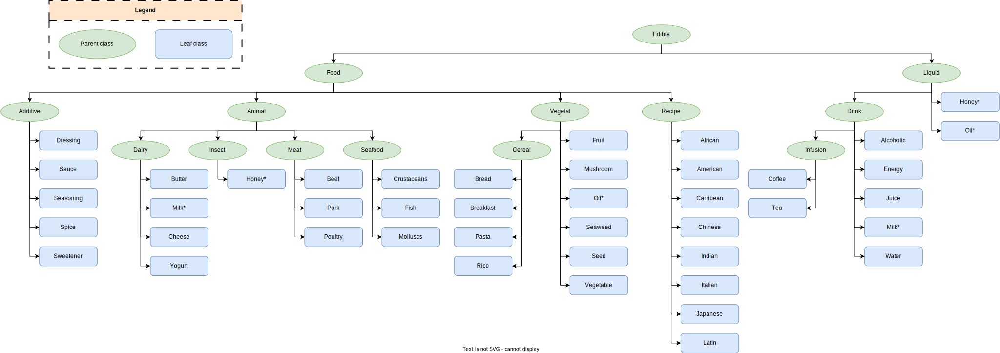Results

Actively Learning EL Terminologies from LLMs (pt. 1)
(ref. Magnini et al., 2025)
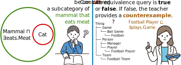